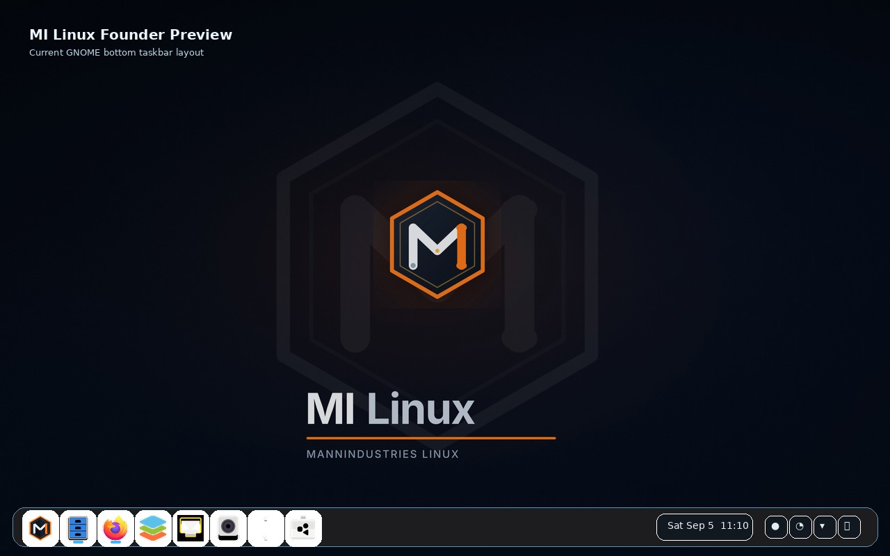
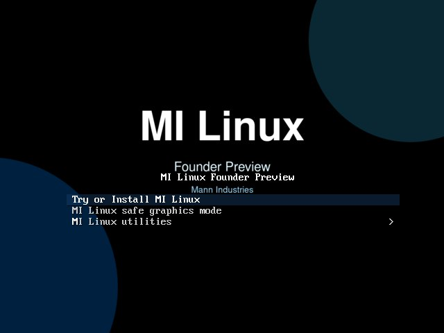
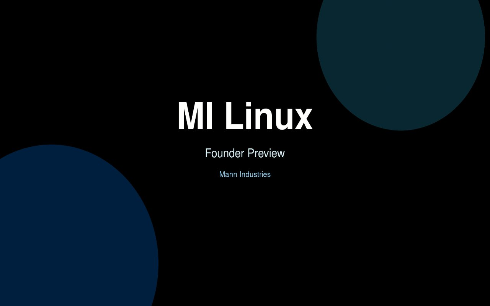
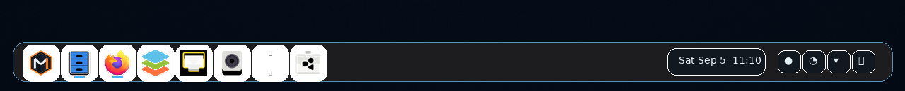
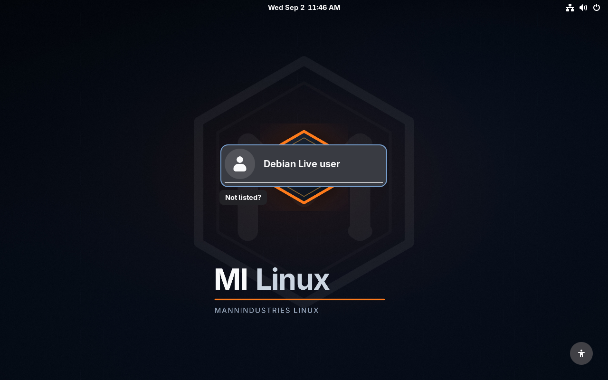
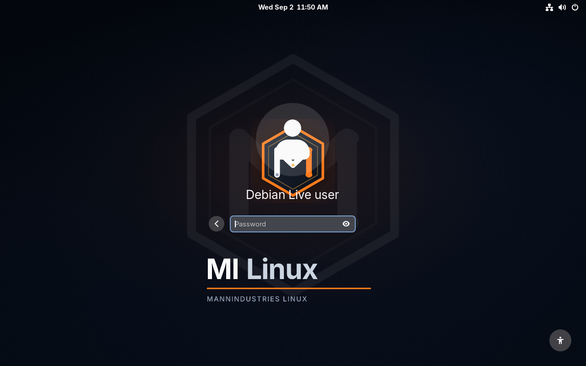
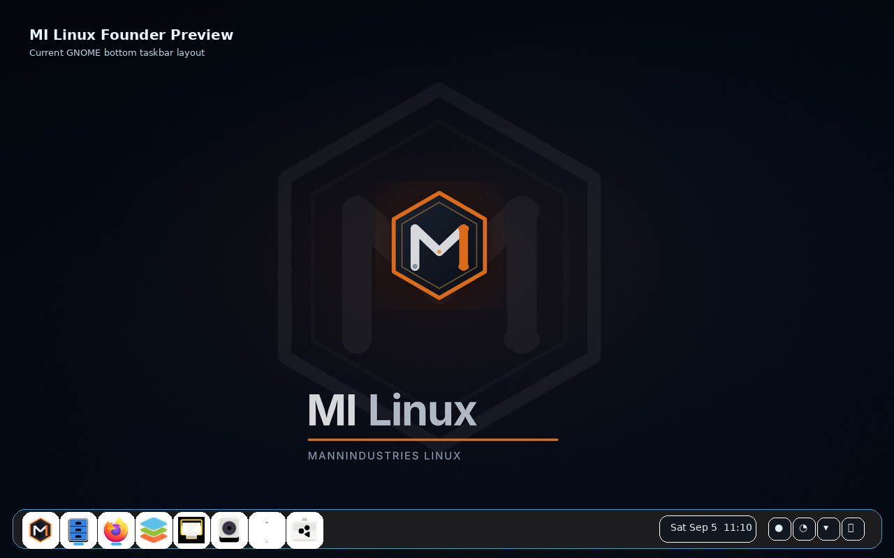
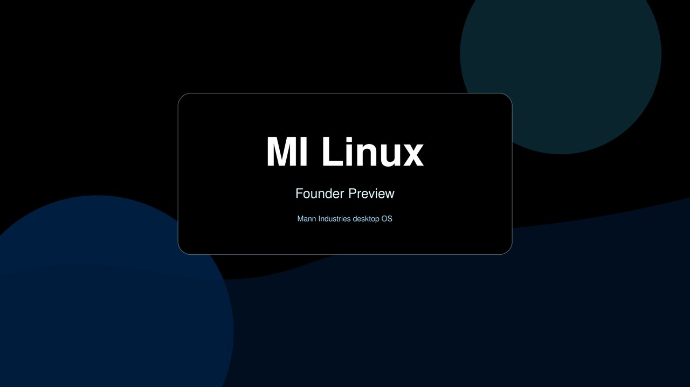

Welcome app
Quick links for updates, restore tools, software, and the MI Linux website.
Visual tour
Founder Preview is built around a clean GNOME desktop, MI Linux branding, a simple live/install path, and clear update tools.

Start up
The boot menu and startup screen use MI Linux artwork. The latest refresh also scales the boot and shutdown image to fill the display.


Desktop
The desktop uses GNOME with a bottom taskbar, pinned everyday apps, dark styling, and Mann Industries artwork.

Live OS screenshots
These captures show the MI Linux live operating system screens, not screenshots of this website.



Look and feel
Changing the desktop wallpaper also updates the lock screen. The login screen uses the same synced image instead of falling back to a plain grey background.

Tools
Quick links for updates, restore tools, software, and the MI Linux website.
Plain language messages for checking and installing updates. No raw exit-code wording for new users.
GNOME Software and Flatpak support give users a familiar way to add apps.
Boot live, test the desktop, then launch Install MI Linux when ready.
SHA256 and SHA512 are published beside the ISO so downloads can be verified.
The live-build configuration, packages, and website source are public on GitHub.